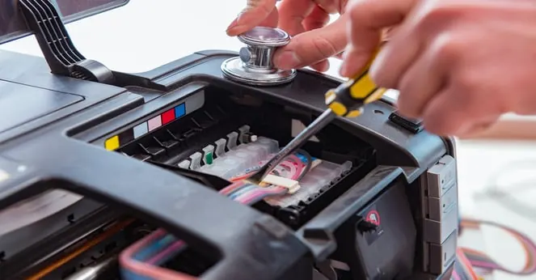

Printers
Repair or Replace? How to Decide When Your Printer Starts Failing
Use printer age, repair cost, print volume, reliability and supply availability to decide whether to repair or replace a failing printer.
Introduction: A Fault Does Not Always Mean a New Printer
Sometimes it can be more beneficial to just chuck the printer away and buy a new one. If there is a specific issue with it such as a faulty roller or clogged print head it can be more beneficial to repair however if there are several old parts within the printer it might not be worth it. This will mainly depend on the issue with the printer, age of it, how much use you will be getting out of it and the cost of keeping it running.
Think about the cost of the repair versus how much use you would get from it. Think about how much the printer is worth, if parts can be found easily, how much downtime you would have and if using a new printer would be more suitable.

1. What is the issue?
Write down any issues you have with your printer. Is it paper jams, streaks, printing blank pages, printing slow, connectivity issues, unusual noises or error messages? Has the issue happened to every print you do or only specific papers, applications or computers? This can help identify if there is an individual issue that could be caused by incorrect paper or just a short term software issue. Or if there are several issues meaning it has an issue or is faulty.
Do very basic troubleshooting to identify any issues. This would include checking the paper, consumables, clearing print queue and the correct quality check. Don’t try to open up the printer. If there is an error code note this down. This may show which part is causing the issue or any servicing required.
2. Age of Printer & Quality of Printer
This is an important factor to think about but shouldn’t be the only thing. Office printers that have been well looked after can last many years however if it’s a cheap printer for home use it may not be worth repairing if it has had a major issue. Think about how much it has been used, how well it has been looked after and if it is still meeting the standards you require.
If it was a printer for occasional home use it may not be suitable for the growing business. If you’re printing more regularly then it maybe a good idea to upgrade to a printer more suitable for your needs.

3. Get a Repair quote
Talk to a qualified service provider and ask them to identify the issue with your printer and what the cost will be. Ask for a detailed breakdown of parts, labour and diagnostic charge. Ask if this will solve the regular issue and if there are other parts that are worn and may need fixing soon. Ask if there is a warranty and if parts can be sourced.
This will help you work out if it’s worth repairing. If the technician can’t be specific on what the issue is without doing any further diagnostics ask how much this would cost. Don’t let them do any expensive work if they can’t be specific.
4. Cost of repairing vs buying a new printer
Don’t just compare the price of repairing against the cheapest printer. Think about the total cost of a suitable printer. Think about the cost of consumables, paper handling, duplex printing, scanning, warranty and set up costs.
It’s a good idea to be realistic with how much it’ll cost in the next couple of years. If you can get a reliable printer at a reasonable price to repair it may be worth it. However if there are several parts to replace, expensive consumables or it doesn’t have the features you need for your business it could be more beneficial to buy a new one. Consider how much staff time is being lost due to the regular issues.
5. Consumables & Parts Available
Before repairing an older printer make sure you can source the right cartridges, toner, rollers, maintenance kits and parts. If the printer will become unreliable soon due to a key consumable no longer being available it won’t be as appealing to repair.
Don’t buy lots of cartridges for a printer you are going to replace. You should know the exact model and part number. Often unused consumables won’t be suitable for any other printers.
6. Print Quality & Productivity
Whilst the printer may be working it could be impacting your business. It could be printing slowly, poor quality, too much manual input or not enough capacity. If your staff are constantly reprinting due to streaks or paper feed issues it can cost more than repairing. Think about how well it’s working.
A new printer could provide faster duplex printing, larger paper capacity, better networking and more efficient consumables. However this will only be an issue if it fixes an issue.
7. Security & Software
If your printer connects to a network it can be a security risk. It could contain job details, address book and settings. Older printers may not have firmware updates or security features. Talk to your manufacturer to see if they still provide support and updates.
If you are printing confidential documents you may want to have secure print release, admin control and network settings. If it’s not meeting your security requirements it may be a good idea to replace.
8. Downtime
If you are using the printer at home it may be inconvenient to have it out of action for a couple of days. If you are using it for labels, invoices, forms or customer documents it can cause issues. Think about if you have a spare printer, local print shop or digital option.
Ask how long realistically it would take to repair. Would they need to order any parts? If you’re unsure or it will take a long time to repair it may be worth replacing to ensure you have a reliable service. Having a backup can help take the pressure off to make a quick decision.
9. Use a simple checklist
Most of the time if there is an isolated issue, it’s fairly suitable for your print volumes, consumables can be sourced and it’s a reasonable quote to repair it will be worth repairing. However if there are regular issues, several parts failing, consumables are difficult to source, there is no security support or it’s not meeting demand it may be worth replacing.
Note down the repair quote, cost of replacement, how much you expect to print per month, consumables cost, warranty and risk of downtime. Don’t think about the percentages but take all factors into consideration. The cheapest option may not be the best long term option.
Conclusion – Consider value & reliability
When thinking about a faulty printer think about how much it’s worth and if it will meet demand. Firstly make sure it has been clearly diagnosed, you have a written quote and parts/consumables available. Think about the total cost of repairing versus a suitable replacement. Think about consumables, security, productivity & downtime. If you can get it focussed repaired to ensure you have a reliable printer then repair. If there are regular issues or it’s outdated it may be worth replacing.
Need a hand with your printer or laptop?
Printerworld sells printers, laptops and genuine supplies, and repairs and services both. Bring in your model number and we will help you get it right.